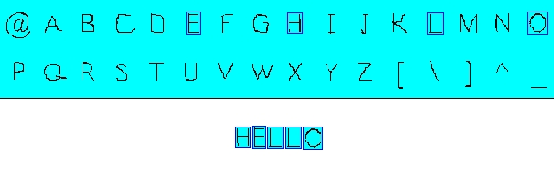
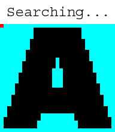

Bitmap Fonts
Last Updated 5/25/14
Some times TTF fonts are flexible enough. Since rendering text is just rendering images of characters, we can use bitmap fonts to render text.
If you think of each character in a string as a sprite, you can think of font rendering as arranging a bunch of sprites:
Bitmap fonts work by taking a sprite sheet of glyphs (character images) and rendering them in order to form strings on the screen.

Bitmap fonts work by taking a sprite sheet of glyphs (character images) and rendering them in order to form strings on the screen.
//Texture wrapper class
class LTexture
{ public: //Initializes variables LTexture(); //Deallocates memory
~LTexture(); //Loads image at specified path bool loadFromFile(
std::string path ); #ifdef _SDL_TTF_H //Creates image from font string
bool loadFromRenderedText( std::string textureText, SDL_Color textColor
); #endif //Deallocates texture void free(); //Set color modulation
void setColor( Uint8 red, Uint8 green, Uint8 blue ); //Set blending
void setBlendMode( SDL_BlendMode blending ); //Set alpha modulation
void setAlpha( Uint8 alpha ); //Renders texture at given point void
render( int x, int y, SDL_Rect* clip = NULL, double angle = 0.0,
SDL_Point* center = NULL, SDL_RendererFlip flip = SDL_FLIP_NONE );
//Gets image dimensions int getWidth(); int getHeight(); //Pixel
manipulators bool lockTexture(); bool unlockTexture(); void*
getPixels(); int getPitch(); Uint32 getPixel32( unsigned int x,
unsigned int y ); private: //The actual hardware texture SDL_Texture*
mTexture; void* mPixels; int mPitch; //Image dimensions int mWidth; int
mHeight;
};
In previous tutorials when we did texture pixel manipulation,
we didn't care which pixel we got since we wanted to
grab all the pixels. Here we need to get pixels at exact x/y
coordinates which is why we're adding a getPixel32 function. This
function works specifically for 32bit pixels.
//Our bitmap font
class LBitmapFont
{
public:
//The default constructor
LBitmapFont();
//Generates the font
bool buildFont( LTexture *bitmap );
//Shows the text
void renderText( int x, int y, std::string text );
private:
//The font texture
LTexture* mBitmap;
//The individual characters in the surface
SDL_Rect mChars[ 256 ];
//Spacing Variables
int mNewLine, mSpace;
};
Here is our bitmap font which functions as a
wrapper for a sprite sheet of glyphs. It has a constructor to
initialize internal variables, a function to build the font, and a
function
to render the text.
When the bitmap font is built we go through the texture a find all the character sprites for the 256 characters (that are stored in the mChars array) and calculate the distance for a new line and a space.
When the bitmap font is built we go through the texture a find all the character sprites for the 256 characters (that are stored in the mChars array) and calculate the distance for a new line and a space.
bool LTexture::loadFromFile( std::string path )
{ //Get rid of preexisting texture free(); //The final texture
SDL_Texture* newTexture = NULL; //Load image at specified path
SDL_Surface* loadedSurface = IMG_Load( path.c_str() ); if(
loadedSurface == NULL ) { printf( "Unable to load image %s! SDL_image
Error: %s\n", path.c_str(), IMG_GetError() ); } else { //Convert
surface to display format SDL_Surface* formattedSurface =
SDL_ConvertSurfaceFormat( loadedSurface, SDL_PIXELFORMAT_RGBA8888, NULL
); if( formattedSurface == NULL ) { printf( "Unable to convert loaded
surface to display format! %s\n", SDL_GetError() ); } else { //Create
blank streamable texture newTexture = SDL_CreateTexture( gRenderer,
SDL_PIXELFORMAT_RGBA8888, SDL_TEXTUREACCESS_STREAMING,
formattedSurface->w, formattedSurface->h ); if( newTexture ==
NULL ) { printf( "Unable to create blank texture! SDL Error: %s\n",
SDL_GetError() ); } else { //Enable blending on texture
SDL_SetTextureBlendMode( newTexture, SDL_BLENDMODE_BLEND ); //Lock
texture for manipulation SDL_LockTexture( newTexture,
&formattedSurface->clip_rect, &mPixels, &mPitch );
//Copy loaded/formatted surface pixels memcpy( mPixels,
formattedSurface->pixels, formattedSurface->pitch *
formattedSurface->h ); //Get image dimensions mWidth =
formattedSurface->w; mHeight = formattedSurface->h; //Get pixel
data in editable format Uint32* pixels = (Uint32*)mPixels; int
pixelCount = ( mPitch / 4 ) * mHeight; //Map colors Uint32 colorKey =
SDL_MapRGB( formattedSurface->format, 0, 0xFF, 0xFF ); Uint32
transparent = SDL_MapRGBA( formattedSurface->format, 0x00, 0xFF,
0xFF, 0x00 ); //Color key pixels for( int i = 0; i < pixelCount; ++i
) { if( pixels[ i ] == colorKey ) { pixels[ i ] = transparent; } }
//Unlock texture to update SDL_UnlockTexture( newTexture ); mPixels =
NULL; } //Get rid of old formatted surface SDL_FreeSurface(
formattedSurface ); } //Get rid of old loaded surface SDL_FreeSurface(
loadedSurface ); } //Return success mTexture = newTexture; return
mTexture != NULL;
}
Here is our texture loading from the previous
tutorial with some more tweaks. We did the color keying externally in
the previous tutorial, and here we're doing it internally in the
texture loading function.
Secondly, we're specifying the texture pixel format as SDL_PIXELFORMAT_RGBA8888 so we know we'll get 32bit RGBA pixels.
Secondly, we're specifying the texture pixel format as SDL_PIXELFORMAT_RGBA8888 so we know we'll get 32bit RGBA pixels.
Uint32 LTexture::getPixel32( unsigned int x, unsigned int y )
{
//Convert the pixels to 32 bit
Uint32 *pixels = (Uint32*)mPixels;
//Get the pixel requested
return pixels[ ( y * ( mPitch / 4 ) ) + x ];
}
Here is our function to get a pixel at a specific offset.
The important thing to know is that even though we have a 2 dimensional texture image like this:
Pixels are stored in one dimension like this:
So if you wanted to get the blue pixel in row 1, column 1 (the first row/column is row/column 0), you would have to calculate the offset like this:
Y Offset * Pitch + X Offset
Which comes out to:
1 * 5 + 1 = 6
And as you can see, the pixel at index 6 on the 1 dimensional pixels is the same as the one on row 1 column 1 on the 2 dimensional pixels.
And if you're wondering why we divide the pitch by 4, remember that the pitch is in bytes. Since we need the pitch in pixels and there's 4 bytes per pixel, we divide the pitch by 4.
The important thing to know is that even though we have a 2 dimensional texture image like this:
Pixels are stored in one dimension like this:
So if you wanted to get the blue pixel in row 1, column 1 (the first row/column is row/column 0), you would have to calculate the offset like this:
Y Offset * Pitch + X Offset
Which comes out to:
1 * 5 + 1 = 6
And as you can see, the pixel at index 6 on the 1 dimensional pixels is the same as the one on row 1 column 1 on the 2 dimensional pixels.
And if you're wondering why we divide the pitch by 4, remember that the pitch is in bytes. Since we need the pitch in pixels and there's 4 bytes per pixel, we divide the pitch by 4.
LBitmapFont::LBitmapFont()
{
//Initialize variables
mBitmap = NULL;
mNewLine = 0;
mSpace = 0;
}
Here in the constructor we initialize the internals.
bool LBitmapFont::buildFont( LTexture* bitmap )
{
bool success = true;
//Lock pixels for access
if( !bitmap->lockTexture() )
{
printf( "Unable to lock bitmap font texture!\n" );
success = false;
}
Now we're entering the function that's going to go
through the bitmap font and define all the clip rectanges for all the
sprites. To do that we'll have to lock the texture to access
its pixels.
else
{
//Set the background color
Uint32 bgColor = bitmap->getPixel32( 0, 0 );
//Set the cell dimensions
int cellW = bitmap->getWidth() / 16;
int cellH = bitmap->getHeight() / 16;
//New line variables
int top = cellH;
int baseA = cellH;
//The current character we're setting
int currentChar = 0;
In order for this bitmap font loading to work, the character glyphs need to be arranged in cells:
The cells all need to all have the same width and height, arranged in 16 columns and 16 rows, and need to be in ASCII order. The bitmap font loader is going to go through each of the cells, find the sides of the glyph sprites and set the clip rectangle for the sprite.
First we get the background color which we'll need to find the edges of the glyph sprites. Then we calculate the cell width and height. We have the variable called top which will keep track of the top of the tallest glyph in the sprite sheet. The variable baseA will keep track of the offset of the bottom of the capital A glyph which will use as a base line for rendering characters.
Lastly we have the currentChar which keeps track of the current character glyph we're looking for.
The cells all need to all have the same width and height, arranged in 16 columns and 16 rows, and need to be in ASCII order. The bitmap font loader is going to go through each of the cells, find the sides of the glyph sprites and set the clip rectangle for the sprite.
First we get the background color which we'll need to find the edges of the glyph sprites. Then we calculate the cell width and height. We have the variable called top which will keep track of the top of the tallest glyph in the sprite sheet. The variable baseA will keep track of the offset of the bottom of the capital A glyph which will use as a base line for rendering characters.
Lastly we have the currentChar which keeps track of the current character glyph we're looking for.
//Go through the cell rows
for( int rows = 0; rows < 16; ++rows )
{
//Go through the cell columns
for( int cols = 0; cols < 16; ++cols )
{
//Set the character offset
mChars[ currentChar ].x = cellW * cols;
mChars[ currentChar ].y = cellH * rows;
//Set the dimensions of the character
mChars[ currentChar ].w = cellW;
mChars[ currentChar ].h = cellH;
These two nested for loops are for going through the cell rows/columns.
At the top of per cell loop, we initialize the glyph sprite positon at the top of the cell and the sprite dimensions to be the cell dimensions. This means by default the glyph sprite is the full cell.
At the top of per cell loop, we initialize the glyph sprite positon at the top of the cell and the sprite dimensions to be the cell dimensions. This means by default the glyph sprite is the full cell.
//Find Left Side
//Go through pixel columns
for( int pCol = 0; pCol < cellW; ++pCol )
{
//Go through pixel rows
for( int pRow = 0; pRow < cellH; ++pRow )
{
//Get the pixel offsets
int pX = ( cellW * cols ) + pCol;
int pY = ( cellH * rows ) + pRow;
//If a non colorkey pixel is found
if( bitmap->getPixel32( pX, pY ) != bgColor )
{
//Set the x offset
mChars[ currentChar ].x = pX;
//Break the loops
pCol = cellW;
pRow = cellH;
}
}
}
For each cell we need to go through all the pixels
in the cell to find the edge of the glyph sprite. In this loop we go
through each column from top to bottom and look for the first
pixel that is not the background color. Once we find a pixel that is
not the background color it means we found the left edge of the sprite:
When we find the left side of the glyph we set it as x position of the sprite and then break the loops.

When we find the left side of the glyph we set it as x position of the sprite and then break the loops.
//Find Right Side
//Go through pixel columns
for( int pColW = cellW - 1; pColW >= 0; --pColW )
{
//Go through pixel rows
for( int pRowW = 0; pRowW < cellH; ++pRowW )
{
//Get the pixel offsets
int pX = ( cellW * cols ) + pColW;
int pY = ( cellH * rows ) + pRowW;
//If a non colorkey pixel is found
if( bitmap->getPixel32( pX, pY ) != bgColor )
{
//Set the width
mChars[ currentChar ].w = ( pX - mChars[ currentChar ].x ) + 1;
//Break the loops
pColW = -1;
pRowW = cellH;
}
}
}
Here we're looking for the pixel on the right
side. It works pretty much the same as finding the left side, only now
we're moving from right to left instead of left to right.
When we find the right pixel, we use it to set the width. Since the pixel array starts at 0, we need to add 1 to the width.
When we find the right pixel, we use it to set the width. Since the pixel array starts at 0, we need to add 1 to the width.
//Find Top
//Go through pixel rows
for( int pRow = 0; pRow < cellH; ++pRow )
{
//Go through pixel columns
for( int pCol = 0; pCol < cellW; ++pCol )
{
//Get the pixel offsets
int pX = ( cellW * cols ) + pCol;
int pY = ( cellH * rows ) + pRow;
//If a non colorkey pixel is found
if( bitmap->getPixel32( pX, pY ) != bgColor )
{
//If new top is found
if( pRow < top )
{
top = pRow;
}
//Break the loops
pCol = cellW;
pRow = cellH;
}
}
}
Here is the code to find the top of the sprite. When we find a top that
is higher that the current highest top, we set it as the new top.
Note that since the y axis is inverted, the highest top actually has the lowest y offset.
Note that since the y axis is inverted, the highest top actually has the lowest y offset.
//Find Bottom of A
if( currentChar == 'A' )
{
//Go through pixel rows
for( int pRow = cellH - 1; pRow >= 0; --pRow )
{
//Go through pixel columns
for( int pCol = 0; pCol < cellW; ++pCol )
{
//Get the pixel offsets
int pX = ( cellW * cols ) + pCol;
int pY = ( cellH * rows ) + pRow;
//If a non colorkey pixel is found
if( bitmap->getPixel32( pX, pY ) != bgColor )
{
//Bottom of a is found
baseA = pRow;
//Break the loops
pCol = cellW;
pRow = -1;
}
}
}
}
//Go to the next character
++currentChar;
}
}
In terms of looking for the bottom of the glyphs, the only one we care
about is the capital A. For this bitmap font builder we're going to use
the bottom of the A glyph sprite
as the base line so characters like "g", "j", "y", etc that hang below
the baseline don't define the bottom. You don't have to do it this way,
but it's given me good results before.
//Calculate space
mSpace = cellW / 2;
//Calculate new line
mNewLine = baseA - top;
//Lop off excess top pixels
for( int i = 0; i < 256; ++i )
{
mChars[ i ].y += top;
mChars[ i ].h -= top;
}
bitmap->unlockTexture();
mBitmap = bitmap;
}
return success;
}
After we're done defining all the sprites, we have
some post processing to do. First we calculate how long a space is.
Here we're defining it as half a cell width. We then calculate
the height of a new line by using the baseline and the highest sprite
top.
We then lop off the extra space at the top of each glyph to prevent there from being too much space between lines. Finally we unlock the texture and set the bitmap for the bitmap font.
Now the way we constructed the bitmap font isn't the only way to do it. You can define spaces, new lines, and base lines another way. You use an XML file to define the positions of the sprites instead of using cells. I decided to go with this method because it's a common one and it has worked for me.
We then lop off the extra space at the top of each glyph to prevent there from being too much space between lines. Finally we unlock the texture and set the bitmap for the bitmap font.
Now the way we constructed the bitmap font isn't the only way to do it. You can define spaces, new lines, and base lines another way. You use an XML file to define the positions of the sprites instead of using cells. I decided to go with this method because it's a common one and it has worked for me.
void LBitmapFont::renderText( int x, int y, std::string text )
{
//If the font has been built
if( mBitmap != NULL )
{
//Temp offsets
int curX = x, curY = y;
Now that we have all the glyph sprites defined,
it's time to render them to the screen. First we check that there is a
bitmap to render with, then we declare x/y offsets that we'll
be using to render the current glyph sprite.
//Go through the text
for( int i = 0; i < text.length(); ++i )
{
//If the current character is a space
if( text[ i ] == ' ' )
{
//Move over
curX += mSpace;
}
//If the current character is a newline
else if( text[ i ] == '\n' )
{
//Move down
curY += mNewLine;
//Move back
curX = x;
}
Here is the for loop that goes through the string
to render each glyph sprite. However there are two ASCII values we're
not actually going to render anything for. When we have a
space, all we have to do is move over the space width. When we have a
new line we move down a new line and back to the base x offset.
else
{
//Get the ASCII value of the character
int ascii = (unsigned char)text[ i ];
//Show the character
mBitmap->render( curX, curY, &mChars[ ascii ] );
//Move over the width of the character with one pixel of padding
curX += mChars[ ascii ].w + 1;
}
}
}
}
For nonspecial characters, we render the sprite.
As you can see, it's as simple as getting the ASCII value, rendering
the sprite associated with the ASCII value and then moving over
the width of the sprite.
The for loop will then keep going through all the characters and rendering the sprite for each of them one after the other.
The for loop will then keep going through all the characters and rendering the sprite for each of them one after the other.